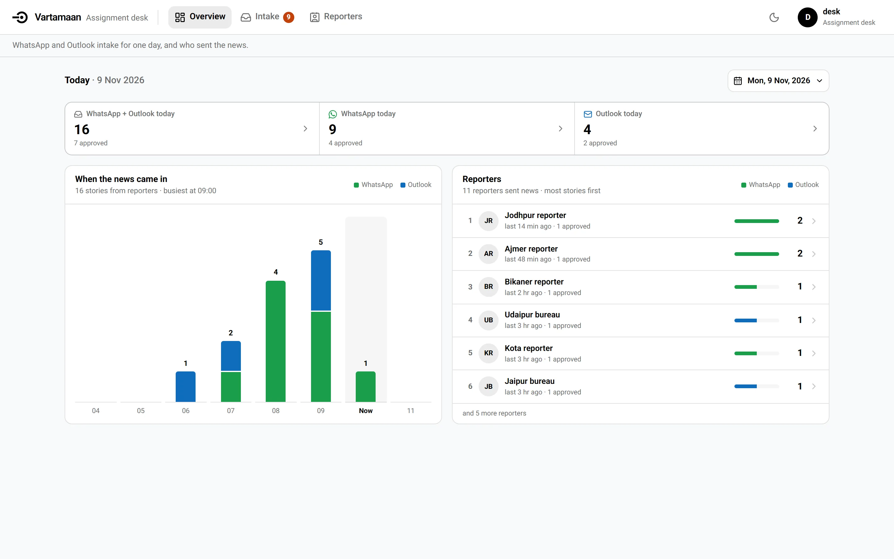
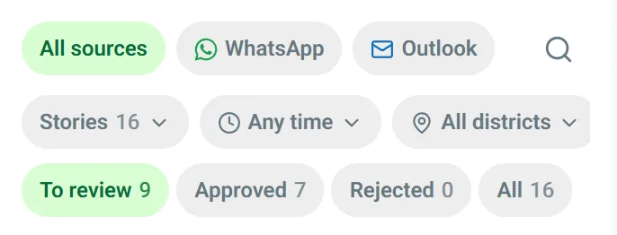
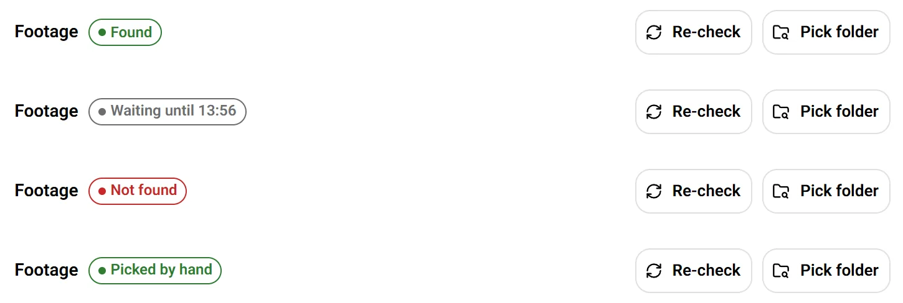
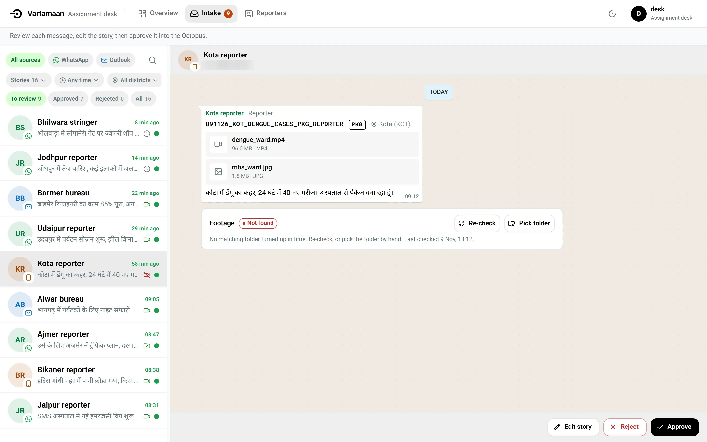
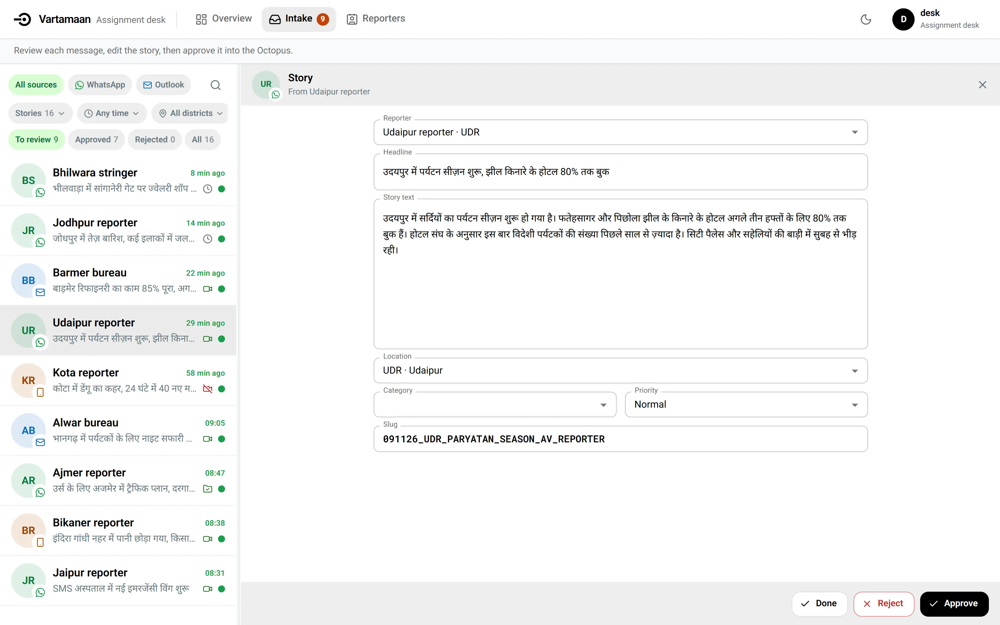
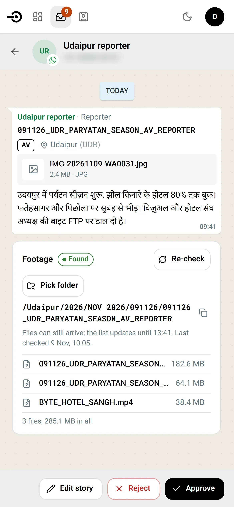

Three sources, one inbox
WhatsApp, Outlook and the Reporter app feed the same inbox. Outlook is checked every 60 seconds. The Reporter app takes up to 20 files in one report.
[ JAIPUR ] [ ] [ SECTION C / INSIDE PAGES ]
Section C / Inside pagesFeatures
Intake, footage, the editor, and who can do what. Short columns, real screens, sample data.
Three sources, one inbox, and the noise kept out of the way.
WhatsApp, Outlook and the Reporter app feed the same inbox. Outlook is checked every 60 seconds. The Reporter app takes up to 20 files in one report.
Texts, photos and voice notes a reporter sends within 90 seconds become one item, so a story arrives whole.
Every item is a story, a press release, a day plan or not a story. The default view shows stories only.
The Overview counts the day's WhatsApp and Outlook intake, charts when the news came in, hour by hour, and ranks reporters by stories sent.


Found on the newsroom FTP and matched to the slug, without changing the reporter's footage.
Exact slug, then prefix, then loose files. A fuzzy match counts only when the date, the reporter and the type all agree.
Waiting, Found, Not found, Picked by hand and Not checked. The desk always knows where the footage stands.
It scans every 5 minutes and waits up to 4 hours, reading the district's folder whatever its date folders are called, and checking day folders one day either side.
When a match is wrong or missing, Re-check runs it again and Pick folder lets the desk choose by hand. It never changes the reporter's footage; the only place it writes is its own folder.
Footage thumbnails and a preview in the panel are planned. Today the panel lists the files by name, size and time.


The desk's own words, and the decision, before anything leaves.
Reporter, headline, story text, location, category, priority and slug, in one form. The slug stays in its own monospace field.
Three decisions, and a person makes each one. Stories carry one of 10 story types and sit in one of 6 review states.
Approved stories enter the feed Octopus reads, with a Hindi byline, as a FLASH, an UPDATE or a KILL. The progress line runs Received, Media, Review, FTP folder, RSS feed.
Hold, Send back and Duplicate; detailed approve and reject reasons; Octopus read-back, showing whether a story aired and in which bulletin.


Each person on the desk sees and does only what their role allows.
Access is set by 5 roles built from 15 permission keys: seeing the overview, approving stories, picking footage folders, managing the feed, managing users and more.
Ten failed logins within 15 minutes lock the account.
Uploads are capped at 500 MB; larger files go by FTP. The Reporter app takes up to 20 files in one report.
Switching single pages or actions on or off for one person is planned. Today, access follows the role.